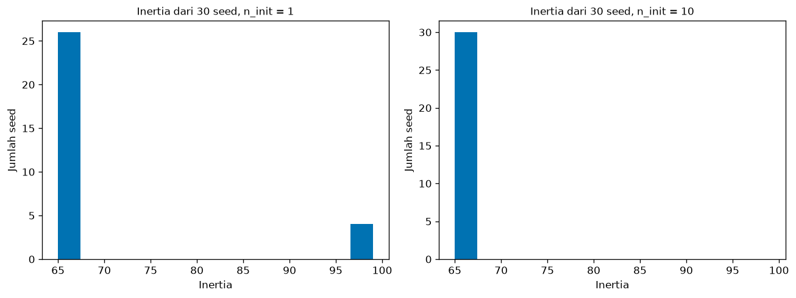
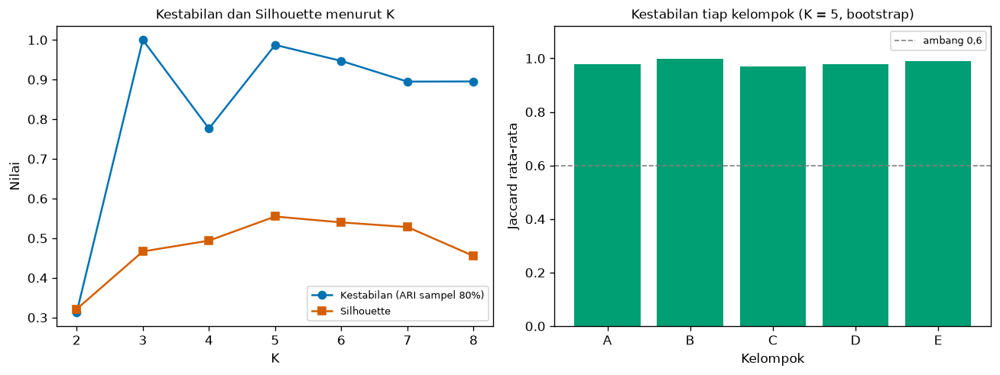
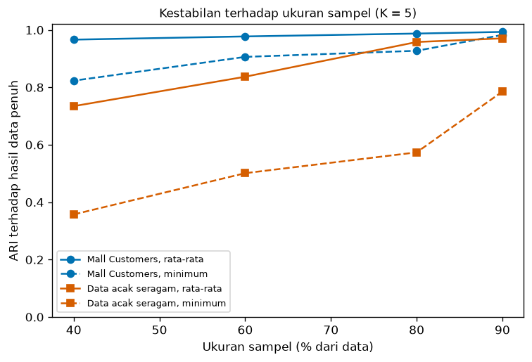

Bab 9 — Cluster Stability and Reproducibility¶
Learning Objectives¶
Setelah mempelajari bab ini, kamu mampu:
- Menjelaskan beda kestabilan (stability) dan reproduksibilitas (reproducibility), dan mengapa keduanya perlu diperiksa.
- Menjelaskan mengapa ID kelompok tidak boleh dibandingkan langsung antar eksekusi, dan memakai ARI sebagai gantinya.
- Mengukur kestabilan terhadap seed inisialisasi, sampel data, praproses, dan hyperparameter (termasuk K).
- Menghitung kestabilan tiap kelompok dengan bootstrap dan indeks Jaccard.
- Menjelaskan bahwa hasil yang stabil belum tentu benar atau bermakna, dan menunjukkannya dengan data tanpa struktur.
- Mencatat seed, versi pustaka, sidik jari data, dan konfigurasi agar eksperimen bisa diulang.
- Menyebut keterbatasan analisis kestabilan.
- Menjalankan Eksperimen F dari awal sampai akhir dan mencatatnya.
Introduction¶
Bab 3 sampai 8 menghasilkan, menyetel, membandingkan, menggambar, dan menafsirkan kelompok. Semuanya berpegang pada satu hasil clustering. Padahal hasil itu bisa berbeda bila seed berubah, bila beberapa baris data hilang, atau bila data diskalakan dengan cara lain. Jika kesimpulan kita runtuh karena perubahan sekecil itu, kesimpulan itu rapuh.
Bab ini menjawab dua pertanyaan yang berbeda:
- Kestabilan: apakah hasil clustering bertahan bila kondisi sedikit diubah? (seed, sampel, praproses, hyperparameter)
- Reproduksibilitas: apakah orang lain (atau kita sendiri, bulan depan) bisa menjalankan ulang dan mendapat hasil yang sama?
Contoh data utama adalah Mall Customers (200 pelanggan, pendapatan dan skor belanja, K = 5), sama seperti Bab 7. Sebagai pembanding dipakai data acak seragam yang tidak memiliki struktur, supaya terlihat apa arti "stabil" dan apa yang tidak dibuktikannya.
Prasyarat
Bab 2 (pencatatan eksperimen), Bab 3 (hyperparameter), Bab 7 (profil Mall Customers), dan Level 5 Bab 8 (ARI). Definisi dan teori ARI tidak diulang. Di sini ARI dipakai sebagai alat untuk membandingkan dua hasil.
Fundamental Concepts¶
| Istilah | Arti |
|---|---|
| Stability | Seberapa mirip hasil clustering ketika kondisi sedikit diubah (seed, sampel, praproses, parameter) |
| Reproducibility | Kemampuan mengulang eksperimen dan mendapat hasil yang sama, dengan data, kode, seed, dan lingkungan yang sama |
| Random seed | Angka awal pembangkit bilangan acak. Seed sama berarti urutan acak sama |
| Initialization sensitivity | Hasil berubah menurut titik awal algoritma (K-Means mencari optimum lokal) |
| Subsampling | Mengambil sebagian data (tanpa pengembalian) lalu meng-cluster ulang |
| Bootstrap | Mengambil sampel dengan pengembalian sebesar data asli lalu meng-cluster ulang |
| Cluster ID | Nomor kelompok yang diberikan algoritma. Nilainya sembarang |
| ARI | Adjusted Rand Index: kemiripan dua pengelompokan, tidak bergantung pada ID (Level 5 Bab 8) |
| Jaccard index | Ukuran kemiripan dua himpunan: \( \lvert A \cap B \rvert / \lvert A \cup B \rvert \) |
| Dataset fingerprint | Kode ringkas (hash) isi data, untuk memastikan data yang dipakai sama |
| Configuration file | File (JSON/CSV) yang menyimpan semua pengaturan eksperimen |
Detailed Explanation¶
Stabil dan reproduksibel itu berbeda¶
| Pertanyaan | Contoh gagal | |
|---|---|---|
| Reproduksibilitas | Apakah menjalankan ulang yang persis sama memberi hasil yang sama? | Lupa mencatat seed, versi pustaka berubah, file data berubah |
| Stabilitas | Apakah hasil bertahan jika kondisi sedikit berbeda? | Hasil berubah total saat 20% data dibuang atau seed diganti |
Eksperimen bisa reproduksibel tetapi tidak stabil: dengan seed 7 kita selalu mendapat hasil yang sama, namun seed 8 memberi hasil berbeda. Eksperimen juga bisa stabil tetapi tidak reproduksibel: hasilnya selalu mirip, tetapi kita tidak mencatat bagaimana mencapainya, sehingga orang lain tidak bisa mengulangnya. Idealnya kedua sifat dimiliki.
Stabil belum tentu benar
Hasil yang stabil hanya berarti algoritma konsisten, bukan bahwa kelompoknya bermakna. K-Means pada data tanpa struktur pun menghasilkan kelompok yang cukup stabil (lihat Eksperimen F). Kestabilan adalah syarat perlu yang lemah, bukan bukti. Ia harus dibaca bersama metrik (Level 5), visualisasi (Bab 8), dan makna praktis.
Jangan bandingkan ID kelompok langsung¶
K-Means memberi nomor kelompok 0, 1, 2, ... secara sembarang. Dua eksekusi bisa menghasilkan pengelompokan yang identik tetapi dengan nomor yang tertukar: kelompok yang tadinya 0 menjadi 2.
Jika kita menghitung "berapa persen titik yang ID-nya sama" antar eksekusi, hasilnya bisa mendekati nol padahal pengelompokannya sama persis. Karena itu kita memakai ukuran yang tidak bergantung pada ID, yaitu ARI: ia hanya melihat pasangan titik, apakah dua titik berada dalam kelompok yang sama di kedua hasil, dan bukan nomornya.
Empat sumber ketidakstabilan¶
- Inisialisasi acak. K-Means mulai dari pusat awal acak dan bisa berhenti di optimum lokal yang berbeda.
n_init(jumlah percobaan awal; hasil terbaik dipilih) menekan masalah ini. Hasilnya diperiksa dengan mengganti seed. - Sampel data. Jika membuang sebagian data mengubah kelompok, kelompok itu bergantung pada titik-titik tertentu. Diperiksa dengan subsampling atau bootstrap.
- Praproses. Scaling yang berbeda mengubah jarak (Bab 5, Bab 6). Diperiksa dengan membandingkan hasil di bawah beberapa cara praproses.
- Hyperparameter. Terutama K. Nilai K yang membuat hasil berubah-ubah menunjukkan data tidak mendukung pembagian itu dengan jelas.
Mengukur kestabilan antar-eksekusi¶
Untuk \( R \) eksekusi (misalnya 30 seed), hitung ARI untuk setiap pasangan eksekusi, lalu laporkan rata-rata, minimum, dan maksimum. Rata-rata saja menyembunyikan eksekusi yang jelek. Minimum menunjukkan skenario terburuk.
Kestabilan terhadap sampel¶
Langkahnya:
- Cluster seluruh data. Hasil ini adalah acuan.
- Ambil sampel acak (misalnya 80% data tanpa pengembalian), cluster ulang.
- Bandingkan hasil sampel dengan acuan hanya pada titik yang ada di sampel, memakai ARI.
- Ulangi puluhan kali, lalu laporkan rata-rata dan minimum. Ulangi untuk beberapa ukuran sampel.
ARI mendekati 1 berarti pengelompokan hampir sama. Tidak ada ambang baku untuk "cukup stabil"; yang penting adalah membaca nilainya bersama pembanding dan minimumnya.
Kestabilan terhadap K¶
Langkah di atas dapat dijalankan untuk beberapa nilai K, lalu dibandingkan. Beberapa hal yang perlu diwaspadai:
- K yang sangat tidak stabil menunjukkan bahwa data tidak punya satu pembagian yang jelas pada K itu. Algoritma memilih salah satu dari beberapa pembagian yang sama-sama masuk akal.
- K yang sangat stabil belum tentu K terbaik. Kestabilan dan Silhouette bisa tidak sepakat, dan keduanya hanya alat bantu (Bab 4).
Kestabilan tiap kelompok (Jaccard dengan bootstrap)¶
ARI menilai seluruh pengelompokan sekaligus. Seringkali beberapa kelompok kokoh dan satu kelompok rapuh. Pendekatan Hennig (2007) menilai tiap kelompok:
- Ambil sampel bootstrap (dengan pengembalian) dan cluster ulang.
- Untuk tiap kelompok asli, cari kelompok pada hasil bootstrap yang paling mirip (Jaccard terbesar).
- Ulangi ratusan kali, ambil rata-rata.
Panduan kasar yang sering dikutip: di bawah 0,6 kelompok rapuh, 0,6 sampai 0,75 ada pola tetapi meragukan, di atas 0,75 stabil. Seperti ambang metrik lain, ini aturan kasar.
Reproduksibilitas: yang harus dicatat¶
Agar orang lain (atau kamu sendiri nanti) bisa mengulang eksperimen:
| Yang dicatat | Mengapa |
|---|---|
| Seed | Mengunci bagian acak |
| Versi Python dan pustaka | Algoritma dan nilai bawaan bisa berubah antar versi |
| Sidik jari data | Memastikan data yang sama, bukan hanya nama file yang sama |
| Praproses dan fitur | Hasil bergantung pada keduanya |
| Hyperparameter | Termasuk nilai bawaan yang diandalkan |
| File konfigurasi | Satu tempat untuk semua pengaturan |
| Hasil dan metrik | Untuk perbandingan, bukan hanya gambar |
Bab 2 sudah memperkenalkan pencatatan ini. Bab ini menambahkan sidik jari data dan pencatatan lingkungan untuk satu eksperimen utuh.
Seed bukan jaminan lintas lingkungan
Seed yang sama menghasilkan hasil yang sama di lingkungan yang sama. Versi pustaka atau mesin yang berbeda bisa memberi hasil sedikit berbeda, terutama pada perhitungan bilangan pecahan. Itu sebabnya versi dicatat.
Keterbatasan analisis kestabilan¶
- Bukan bukti validitas. Data acak pun bisa menghasilkan kelompok yang cukup stabil.
- Bergantung pada pilihan. Ukuran sampel, jumlah pengulangan, dan ukuran kemiripan memengaruhi angka.
- Sampel kecil. Pada 200 titik, sampel 40% hanya 80 titik. Ketidakstabilan bisa berasal dari sampel yang terlalu kecil, bukan dari kelompoknya.
- Sampel bukan data baru. Subsampling hanya menguji sensitivitas terhadap data yang sama. Ia tidak menjamin hasil bertahan pada data dari populasi lain.
- Biaya komputasi. Ratusan pengulangan pada data besar bisa mahal.
Kesalahan umum¶
- Membandingkan ID kelompok langsung antar eksekusi.
- Hanya melaporkan rata-rata, tanpa minimum.
- Menyimpulkan "benar" dari "stabil".
- Tidak mencatat seed atau versi pustaka.
- Hanya memeriksa satu sumber ketidakstabilan (misalnya seed) dan melupakan sampel, praproses, serta K.
- Mengganti seed sampai hasilnya bagus, lalu melaporkan hanya yang bagus.
- Menganggap
n_init=1cukup karena sekali jalan tampak masuk akal. - Menguji kestabilan dengan data yang sudah bocor (misalnya menyetel parameter dengan label acuan).
Mathematical Foundation¶
Dua rumus dipakai sebagai alat: ARI (antar-eksekusi dan antar-sampel) dan Jaccard (tiap kelompok).
Adjusted Rand Index (ringkasan)¶
Teori ARI ada di Level 5 Bab 8. Singkatnya, untuk dua pengelompokan \( U \) dan \( V \) atas \( n \) titik, dengan \( n_{ij} \) jumlah titik yang berada di kelompok \( i \) pada \( U \) dan kelompok \( j \) pada \( V \), \( a_i \) jumlah baris tabel silang dan \( b_j \) jumlah kolomnya:
Nilai 1 berarti pengelompokan identik (terlepas dari ID), dan nilai sekitar 0 berarti kesepakatan setara dengan kebetulan.
Perhitungan manual ARI¶
Enam titik. Hasil pertama \( U = [0,0,0,1,1,1] \), hasil kedua \( V = [0,0,1,1,1,1] \). Tabel silangnya: kelompok 0 di \( U \) berisi 2 titik yang di \( V \) juga berkelompok 0 dan 1 titik yang berkelompok 1. Kelompok 1 di \( U \) berisi 3 titik, semuanya berkelompok 1 di \( V \).
- \( \sum_{ij}\binom{n_{ij}}{2} = \binom{2}{2}+\binom{1}{2}+\binom{3}{2} = 1+0+3 = 4 \)
- Jumlah baris \( a = (3, 3) \), sehingga \( \sum_i\binom{a_i}{2} = 3+3 = 6 \)
- Jumlah kolom \( b = (2, 4) \), sehingga \( \sum_j\binom{b_j}{2} = 1+6 = 7 \)
- \( \binom{6}{2} = 15 \), sehingga nilai harapan acak \( = 6 \times 7 / 15 = 2{,}8 \)
- Nilai maksimum \( = (6+7)/2 = 6{,}5 \)
Kode (adjusted_rand_score) memberi 0,3243, cocok. Dan untuk dua pengelompokan yang hanya bertukar ID, \( [0,0,1,1] \) terhadap \( [1,1,0,0] \), ARI-nya tepat 1,0.
Indeks Jaccard¶
Untuk dua himpunan titik \( A \) (kelompok asli) dan \( B \) (kelompok pada hasil bootstrap):
Nilainya 1 jika himpunannya identik dan 0 jika tidak beririsan. Contoh: \( A = \{1,2,3,4\} \) dan \( B = \{3,4,5\} \). Irisannya \( \{3,4\} \) berukuran 2 dan gabungannya \( \{1,2,3,4,5\} \) berukuran 5, sehingga \( J = 2/5 = 0{,}4 \).
Kestabilan kelompok \( c \) adalah rata-rata nilai Jaccard terbaik pada \( B \) ulangan bootstrap:
\( C_c \) adalah kelompok asli \( c \) (dibatasi pada titik yang muncul di sampel bootstrap), dan \( C^{*}_{b,d} \) kelompok \( d \) pada hasil bootstrap ke-\( b \). Maksimum diambil karena kelompok yang sama bisa muncul dengan ID berbeda.
Experimental Procedure (Eksperimen F)¶
- Tujuan: menguji seberapa tahan hasil K-Means pada Mall Customers terhadap seed, sampel, praproses, hyperparameter, dan K, serta mencatat eksperimen agar bisa diulang.
- Dataset (alasan):
- Mall Customers (
data/mall_customers.csv, 200 pelanggan). Dipilih karena sudah dipakai di Bab 7, sehingga kita menguji hasil yang sudah ditafsirkan. - Data acak seragam (200 titik, dua fitur), sebagai pembanding tanpa struktur. Dipilih untuk menunjukkan bahwa kestabilan saja tidak membuktikan adanya kelompok.
- Wine (
sklearn.datasets.load_wine, 13 fitur), hanya untuk perbandingan praproses pada data dengan skala fitur yang sangat berbeda.
- Mall Customers (
- Praproses: z-score per kolom sebagai baseline. Seed 42 (kecuali dinyatakan lain).
- Algoritma: K-Means.
- Langkah: (a) tunjukkan masalah ID kelompok, (b) 30 seed dengan
n_init1 dan 10, (c) tiga praproses, (d) dua cara inisialisasi, (e) subsampling 90%, 80%, 60%, dan 40%, (f) kestabilan menurut K = 2 sampai 8, (g) Jaccard tiap kelompok dengan 100 bootstrap, (h) data tanpa struktur, (i) uji reproduksibilitas dan pencatatan. - Hasil disimpan:
09_stability_by_k.csv,09_cluster_jaccard.csv, dan09_config.jsondiexamples/level-6/results/, serta tiga gambar didocs/assets/level-6/.
Python Implementation¶
Skrip lengkapnya ada di examples/level-6/09_cluster_stability_and_reproducibility.py, dan notebook-nya di notebooks/level-6/09-cluster-stability-and-reproducibility.ipynb. Setiap potongan kode diikuti penjelasannya. Skrip membutuhkan sekitar satu setengah menit karena melakukan ratusan clustering ulang.
Konteks masalah: kamu sudah menafsirkan lima kelompok pelanggan di Bab 7. Sebelum melaporkannya, kamu perlu tahu seberapa kokoh kelima kelompok itu.
Tujuan eksperimen: mengukur kestabilan dan mencatat eksperimen agar bisa diulang.
Pustaka: NumPy, pandas, Matplotlib, scikit-learn (KMeans, StandardScaler, MinMaxScaler, adjusted_rand_score, silhouette_score, load_wine), pustaka standar (hashlib, itertools), dan alat pencatat _experiment.py.
Bagian A — Siapkan alat¶
import hashlib
from itertools import combinations
import numpy as np
import pandas as pd
import matplotlib.pyplot as plt
from sklearn.cluster import KMeans
from sklearn.datasets import load_wine
from sklearn.metrics import adjusted_rand_score, silhouette_score
from sklearn.preprocessing import MinMaxScaler, StandardScaler
import _experiment as ex
SEED = 42
Penjelasan: combinations dari itertools akan dipakai untuk membentuk semua pasangan eksekusi. hashlib membuat sidik jari. _experiment adalah modul pencatat dari bab-bab sebelumnya.
Bagian B — Data¶
df = pd.read_csv("data/mall_customers.csv")
used = ["Annual Income (k$)", "Spending Score (1-100)"]
X = ((df[used] - df[used].mean()) / df[used].std()).to_numpy() # z-score per kolom
print("Data:", X.shape, "| fitur:", used)
Penjelasan: data Mall Customers dibaca, dua fitur dijadikan z-score ((x - rata-rata) / simpangan baku), dan hasilnya adalah array 200 baris dengan dua kolom. Sama seperti Bab 7.
Bagian C — ID kelompok tidak boleh dibandingkan langsung¶
# Dua eksekusi dengan seed berbeda: apakah hasilnya sama? Bandingkan cara naif dan cara yang benar.
run_a = KMeans(n_clusters=5, n_init=10, random_state=0).fit(X).labels_
run_b = KMeans(n_clusters=5, n_init=10, random_state=1).fit(X).labels_
print("ID kelompok identik (cara naif) :", f"{(run_a == run_b).mean() * 100:.1f}% titik")
print("ARI (tidak bergantung pada ID) :", round(adjusted_rand_score(run_a, run_b), 3))
print("Tabel silang ID eksekusi A (baris) vs B (kolom):")
print(pd.crosstab(run_a, run_b).to_string())
ID kelompok identik (cara naif) : 19.5% titik
ARI (tidak bergantung pada ID) : 1.0
Tabel silang ID eksekusi A (baris) vs B (kolom):
col_0 0 1 2 3 4
row_0
0 0 0 81 0 0
1 0 39 0 0 0
2 35 0 0 0 0
3 0 0 0 0 23
4 0 0 0 22 0
Penjelasan:
- Dua eksekusi K-Means dengan seed 0 dan seed 1 (masing-masing
n_init=10). (run_a == run_b).mean()membandingkan ID titik demi titik (cara naif) dan menghitung porsi yang sama.adjusted_rand_score(run_a, run_b)membandingkan pengelompokannya.pd.crosstab(run_a, run_b)membuat tabel silang: baris untuk ID di eksekusi A, kolom untuk ID di eksekusi B. Jika pengelompokannya sama, setiap baris hanya punya satu sel berisi, yaitu isi kelompok yang sama dengan ID berbeda.
Bagian D — Kestabilan terhadap seed¶
def pairwise_ari(label_sets):
"""Rata-rata, minimum, dan maksimum ARI antar semua pasangan hasil."""
values = [adjusted_rand_score(a, b) for a, b in combinations(label_sets, 2)]
return float(np.mean(values)), float(np.min(values)), float(np.max(values))
seed_rows = []
seed_inertias = {}
for n_init in (1, 10):
runs = [KMeans(n_clusters=5, n_init=n_init, random_state=s).fit(X) for s in range(30)]
inertias = np.array([r.inertia_ for r in runs])
seed_inertias[n_init] = inertias
mean_ari, min_ari, max_ari = pairwise_ari([r.labels_ for r in runs])
seed_rows.append({"n_init": n_init, "inertia_min": inertias.min(), "inertia_max": inertias.max(),
"ari_mean": mean_ari, "ari_min": min_ari, "ari_max": max_ari})
print(f"n_init={n_init:2d}: inertia {inertias.min():.4f} sampai {inertias.max():.4f} | "
f"ARI antar seed: rata-rata {mean_ari:.3f}, min {min_ari:.3f}, maks {max_ari:.3f}")
n_init= 1: inertia 65.2406 sampai 98.3137 | ARI antar seed: rata-rata 0.921, min 0.506, maks 1.000
n_init=10: inertia 65.2406 sampai 65.2406 | ARI antar seed: rata-rata 1.000, min 1.000, maks 1.000
Penjelasan:
pairwise_arimenerima daftar label dari beberapa eksekusi, membentuk semua pasangan dengancombinations(label_sets, 2)(untuk 30 eksekusi ada 435 pasangan), menghitung ARI tiap pasangan, dan mengembalikan rata-rata, minimum, maksimum.- Perulangan luar mencoba
n_init=1(satu titik awal) dann_init=10(sepuluh titik awal, hasil terbaik dipilih). - Perulangan dalam (
range(30)) menjalankan K-Means dengan 30 seed berbeda.r.inertia_adalah jumlah kuadrat jarak ke centroid (Level 5): semakin kecil, semakin baik secara internal. Dua eksekusi yang inertia-nya sama persis hampir pasti menghasilkan pengelompokan yang sama.
Bagian E — Kepekaan terhadap praproses¶
# Kepekaan terhadap praproses: tiga cara menyiapkan data, K-Means yang sama (K = 5, n_init = 10)
raw = df[used].to_numpy(float)
variants = {"z-score (baseline)": X, "min-max": MinMaxScaler().fit_transform(raw), "tanpa penskalaan": raw}
variant_labels = {name: KMeans(n_clusters=5, n_init=10, random_state=SEED).fit_predict(data) for name, data in variants.items()}
for name, labels in variant_labels.items():
ari = adjusted_rand_score(variant_labels["z-score (baseline)"], labels)
print(f"{name:20s}: ukuran kelompok {sorted(np.bincount(labels).tolist(), reverse=True)} | ARI terhadap baseline {ari:.3f}")
# Pembanding: Wine, 13 fitur dengan skala sangat berbeda (K = 3)
wine = load_wine(as_frame=True).data
wine_variants = {"z-score (baseline)": StandardScaler().fit_transform(wine), "min-max": MinMaxScaler().fit_transform(wine),
"tanpa penskalaan": wine.to_numpy(float)}
wine_labels = {name: KMeans(n_clusters=3, n_init=10, random_state=SEED).fit_predict(data) for name, data in wine_variants.items()}
for name, labels in wine_labels.items():
ari = adjusted_rand_score(wine_labels["z-score (baseline)"], labels)
print(f"Wine, {name:20s}: ukuran kelompok {sorted(np.bincount(labels).tolist(), reverse=True)} | ARI terhadap baseline {ari:.3f}")
z-score (baseline) : ukuran kelompok [81, 39, 35, 23, 22] | ARI terhadap baseline 1.000
min-max : ukuran kelompok [81, 39, 35, 23, 22] | ARI terhadap baseline 1.000
tanpa penskalaan : ukuran kelompok [81, 39, 35, 23, 22] | ARI terhadap baseline 1.000
Wine, z-score (baseline) : ukuran kelompok [65, 62, 51] | ARI terhadap baseline 1.000
Wine, min-max : ukuran kelompok [62, 61, 55] | ARI terhadap baseline 0.918
Wine, tanpa penskalaan : ukuran kelompok [69, 62, 47] | ARI terhadap baseline 0.354
Penjelasan:
variantsberisi tiga versi data Mall Customers: z-score,MinMaxScaler(diskalakan ke 0 sampai 1), dan tanpa penskalaan (satuan asli).- Setiap versi di-cluster dengan K-Means yang sama, lalu hasilnya dibandingkan dengan baseline (z-score) memakai ARI.
sorted(np.bincount(labels).tolist(), reverse=True)mencetak ukuran kelompok dari yang terbesar. Ukuran dipakai karena ID tidak bisa dibandingkan. - Bagian kedua mengulang hal yang sama untuk Wine, yang 13 fiturnya berskala sangat berbeda (K = 3).
Bagian F — Kepekaan terhadap hyperparameter inisialisasi¶
# Kepekaan terhadap hyperparameter inisialisasi: k-means++ atau acak, dengan n_init = 1, 30 seed
for init in ("k-means++", "random"):
runs = [KMeans(n_clusters=5, init=init, n_init=1, random_state=s).fit(X) for s in range(30)]
inertias = np.array([r.inertia_ for r in runs])
mean_ari, min_ari, _ = pairwise_ari([r.labels_ for r in runs])
best = int((inertias < inertias.min() + 1e-6).sum())
print(f"init={init:9s}: {best} dari 30 seed mencapai inertia terbaik ({inertias.min():.4f}) | ARI antar seed: rata-rata {mean_ari:.3f}, min {min_ari:.3f}")
init=k-means++: 16 dari 30 seed mencapai inertia terbaik (65.2406) | ARI antar seed: rata-rata 0.921, min 0.506
init=random : 9 dari 30 seed mencapai inertia terbaik (65.2406) | ARI antar seed: rata-rata 0.782, min 0.464
Penjelasan: hyperparameter init menentukan cara memilih pusat awal: "k-means++" (pilihan cerdas yang menyebarkan pusat awal, bawaan scikit-learn) atau "random" (acak murni). Dengan n_init=1, kita mengamati 30 seed untuk tiap cara. best menghitung berapa seed yang mencapai inertia terbaik (nilai terkecil ditambah toleransi kecil 1e-6).
Bagian G — Kestabilan terhadap sampel¶
def subsample_ari(X, k, fraction=0.8, repeats=50, seed=SEED):
"""ARI antara pengelompokan data penuh dan pengelompokan pada sampel acak (tanpa pengembalian).
Hanya titik yang ada di sampel yang dibandingkan.
"""
rng = np.random.default_rng(seed)
full = KMeans(n_clusters=k, n_init=10, random_state=SEED).fit(X).labels_
scores = []
for _ in range(repeats):
idx = rng.choice(len(X), size=int(fraction * len(X)), replace=False)
part = KMeans(n_clusters=k, n_init=10, random_state=SEED).fit(X[idx]).labels_
scores.append(adjusted_rand_score(full[idx], part))
return np.array(scores)
fractions = (0.9, 0.8, 0.6, 0.4)
mall_curve = {}
for fraction in fractions:
s = subsample_ari(X, k=5, fraction=fraction)
mall_curve[fraction] = (s.mean(), s.min())
print(f"K=5, sampel {int(fraction * 100)}%, 50 kali: ARI rata-rata {s.mean():.3f} | min {s.min():.3f} | maks {s.max():.3f}")
K=5, sampel 90%, 50 kali: ARI rata-rata 0.993 | min 0.983 | maks 1.000
K=5, sampel 80%, 50 kali: ARI rata-rata 0.987 | min 0.927 | maks 1.000
K=5, sampel 60%, 50 kali: ARI rata-rata 0.977 | min 0.906 | maks 1.000
K=5, sampel 40%, 50 kali: ARI rata-rata 0.966 | min 0.823 | maks 1.000
Penjelasan baris demi baris:
rng = np.random.default_rng(seed)membuat pembangkit acak dengan seed, supaya sampel yang sama bisa diulang.full = KMeans(...).fit(X).labels_adalah hasil pada seluruh data (acuan).rng.choice(len(X), size=int(fraction * len(X)), replace=False)memilih indeks sampel tanpa pengembalian.part = KMeans(...).fit(X[idx]).labels_meng-cluster sampel.adjusted_rand_score(full[idx], part)membandingkan label acuan yang dipotong ke titik sampel dengan label sampel, sehingga keduanya sama panjang dan titiknya sama.- Fungsi mengembalikan 50 nilai ARI. Perulangan di bawahnya menjalankan empat ukuran sampel dan mencetak rata-rata, minimum, maksimum.
mall_curvemenyimpan rata-rata dan minimum untuk gambar nanti.
Bagian H — Kestabilan terhadap K¶
k_rows = []
for k in range(2, 9):
s = subsample_ari(X, k=k)
full = KMeans(n_clusters=k, n_init=10, random_state=SEED).fit(X)
k_rows.append({"k": k, "silhouette": silhouette_score(X, full.labels_),
"stability_mean": s.mean(), "stability_min": s.min()})
k_table = pd.DataFrame(k_rows)
print(k_table.round(3).to_string(index=False))
# Mengapa K = 2 begitu tidak stabil? Pada tiap sampel 80%, periksa sumbu mana yang dipisahkan dua pusat.
rng_k2 = np.random.default_rng(SEED)
axis_counts = {"pendapatan": 0, "skor belanja": 0}
for _ in range(50):
idx = rng_k2.choice(len(X), size=int(0.8 * len(X)), replace=False)
c0, c1 = KMeans(n_clusters=2, n_init=10, random_state=SEED).fit(X[idx]).cluster_centers_
axis_counts["pendapatan" if abs(c0[0] - c1[0]) > abs(c0[1] - c1[1]) else "skor belanja"] += 1
print("K = 2, 50 sampel 80%: dua kelompok memisah menurut", axis_counts)
k silhouette stability_mean stability_min
2 0.321 0.313 -0.013
3 0.467 1.000 1.000
4 0.494 0.776 0.547
5 0.555 0.987 0.927
6 0.540 0.947 0.840
7 0.528 0.895 0.612
8 0.455 0.895 0.697
K = 2, 50 sampel 80%: dua kelompok memisah menurut {'pendapatan': 21, 'skor belanja': 29}
Penjelasan: untuk tiap K dari 2 sampai 8, kita hitung kestabilan (ARI sampel 80%) dan Silhouette pada data penuh, lalu menyusunnya dalam tabel. Bagian bawahnya adalah pemeriksaan khusus K = 2: pada tiap dari 50 sampel, abs(c0[0] - c1[0]) > abs(c0[1] - c1[1]) membandingkan apakah dua pusat lebih berbeda pada sumbu pendapatan (indeks 0) atau skor belanja (indeks 1). Hasilnya menjelaskan mengapa K = 2 tidak stabil.
Bagian I — Kestabilan tiap kelompok¶
def clusterwise_jaccard(X, k=5, repeats=100, seed=SEED):
"""Kestabilan tiap kelompok: rata-rata Jaccard terbaik terhadap kelompok asli, pada sampel bootstrap.
Jaccard dua himpunan = |irisan| / |gabungan|. Nilai di bawah 0,6 menandakan kelompok rapuh
(Hennig, 2007).
"""
rng = np.random.default_rng(seed)
full = KMeans(n_clusters=k, n_init=10, random_state=SEED).fit(X).labels_
sizes = np.bincount(full)
order = np.argsort(-sizes, kind="stable") # A sampai E menurut ukuran, seperti Bab 7
totals = np.zeros(k)
for _ in range(repeats):
idx = rng.choice(len(X), size=len(X), replace=True) # bootstrap: dengan pengembalian
part = KMeans(n_clusters=k, n_init=10, random_state=SEED).fit(X[idx]).labels_
in_sample = np.unique(idx)
for rank, c in enumerate(order):
original = set(np.flatnonzero(full == c)) & set(in_sample)
best = 0.0
for d in range(k):
found = set(idx[part == d])
union = len(original | found)
best = max(best, len(original & found) / union if union else 0.0)
totals[rank] += best
names = list("ABCDEFGH")[:k]
return pd.Series(totals / repeats, index=names), pd.Series(sizes[order], index=names)
jaccard, cluster_sizes = clusterwise_jaccard(X)
print(pd.DataFrame({"ukuran": cluster_sizes, "jaccard_rata": jaccard.round(3)}).to_string())
Penjelasan:
rng.choice(len(X), size=len(X), replace=True)membuat sampel bootstrap: sebesar data asli, dengan pengembalian, sehingga sebagian titik muncul lebih dari sekali dan sebagian tidak muncul.order = np.argsort(-sizes, kind="stable")memberi huruf A sampai E menurut ukuran, seperti Bab 7.in_sample = np.unique(idx)adalah titik yang muncul dalam sampel. Kelompok asli dibatasi pada titik-titik ini (original).- Untuk tiap kelompok hasil bootstrap
d,found = set(idx[part == d])adalah himpunan titiknya, dan Jaccard dihitung sebagailen(irisan) / len(gabungan).maxmemilih kelompok yang paling mirip. Ini rumus \( \gamma_c \). - Hasil dibagi
repeats(100) untuk mendapat rata-rata.
Bagian J — Data tanpa struktur¶
# Data tanpa struktur: 200 titik acak seragam. K-Means tetap membuat 5 kelompok. Apakah mereka stabil?
rng_u = np.random.default_rng(SEED)
X_uniform = rng_u.uniform(size=(200, 2))
X_uniform = (X_uniform - X_uniform.mean(axis=0)) / X_uniform.std(axis=0, ddof=1)
uniform_curve = {}
for fraction in fractions:
s = subsample_ari(X_uniform, k=5, fraction=fraction)
uniform_curve[fraction] = (s.mean(), s.min())
uniform_full = KMeans(n_clusters=5, n_init=10, random_state=SEED).fit(X_uniform)
print(f"Data acak seragam, K=5: Silhouette {silhouette_score(X_uniform, uniform_full.labels_):.3f} (Mall Customers: {k_table.loc[k_table.k == 5, 'silhouette'].iloc[0]:.3f})")
for fraction in fractions:
print(f" sampel {int(fraction * 100)}%: ARI rata-rata {uniform_curve[fraction][0]:.3f} | min {uniform_curve[fraction][1]:.3f} "
f"(Mall: {mall_curve[fraction][0]:.3f} | {mall_curve[fraction][1]:.3f})")
Data acak seragam, K=5: Silhouette 0.414 (Mall Customers: 0.555)
sampel 90%: ARI rata-rata 0.971 | min 0.785 (Mall: 0.993 | 0.983)
sampel 80%: ARI rata-rata 0.958 | min 0.574 (Mall: 0.987 | 0.927)
sampel 60%: ARI rata-rata 0.837 | min 0.501 (Mall: 0.977 | 0.906)
sampel 40%: ARI rata-rata 0.735 | min 0.357 (Mall: 0.966 | 0.823)
Penjelasan: rng_u.uniform(size=(200, 2)) membuat 200 titik acak merata di persegi. Titik-titik ini tidak memiliki kelompok alami, tetapi K-Means tetap membaginya menjadi lima. Data distandarkan seperti Mall Customers. Kita menjalankan subsample_ari yang sama dan membandingkan hasilnya dengan Mall Customers.
Bagian K — Reproduksibilitas¶
def run_pipeline(seed):
"""Seluruh alur dari file data sampai label, supaya bisa diulang dari nol."""
frame = pd.read_csv("data/mall_customers.csv")
z = ((frame[used] - frame[used].mean()) / frame[used].std()).to_numpy()
return z, KMeans(n_clusters=5, n_init=1, random_state=seed).fit(z).labels_
def label_hash(labels):
return hashlib.sha256(np.ascontiguousarray(labels).tobytes()).hexdigest()[:12]
z1, first = run_pipeline(7)
z2, second = run_pipeline(7)
z3, third = run_pipeline(8)
print("Seed sama (7 dan 7): label identik =", np.array_equal(first, second), "| sidik jari label:", label_hash(first), label_hash(second))
print("Seed beda (7 dan 8): label identik =", np.array_equal(first, third), "| ARI =", round(adjusted_rand_score(first, third), 3))
print("Sidik jari data:", ex.dataset_fingerprint(z1), "=", ex.dataset_fingerprint(z2))
print("Lingkungan:", ex.environment_info())
Seed sama (7 dan 7): label identik = True | sidik jari label: 674866d4cc5a 674866d4cc5a
Seed beda (7 dan 8): label identik = False | ARI = 0.703
Sidik jari data: edb2a3858344 = edb2a3858344
Lingkungan: {'python': '3.14.10', 'os': 'Windows', 'numpy': '2.5.2', 'pandas': '3.0.5', 'scikit-learn': '1.9.0', 'scipy': '1.18.1', 'matplotlib': '3.11.1'}
Penjelasan:
run_pipeline(seed)membungkus seluruh alur dari membaca file sampai mendapat label dalam satu fungsi. Eksperimen yang reproduksibel bisa dijalankan dari nol.label_hashmembuat sidik jari label. Dua eksekusi dengan seed sama harus punya sidik jari yang sama.- Kita menjalankan seed 7 dua kali dan seed 8 satu kali, dengan
n_init=1agar pengaruh seed terlihat. ex.dataset_fingerprint(z1)memberi sidik jari data.ex.environment_info()mencatat versi Python dan pustaka.
Bagian L — Menyimpan hasil¶
k_table.assign(dataset="Mall Customers").to_csv(ex.RESULTS_DIR / "09_stability_by_k.csv", index=False)
pd.DataFrame({"ukuran": cluster_sizes, "jaccard_rata": jaccard}).to_csv(ex.RESULTS_DIR / "09_cluster_jaccard.csv")
ex.save_json({"seed": SEED, "dataset": "data/mall_customers.csv", "dataset_fingerprint": ex.dataset_fingerprint(X),
"features": used, "preprocessing": "z-score per kolom", "algorithm": "KMeans n_clusters=5 n_init=10",
"seed_runs": 30, "subsample_fractions": list(fractions), "subsample_repeats": 50,
"bootstrap_repeats": 100, "stability_measure": "ARI (sampel), Jaccard (kelompok)",
"environment": ex.environment_info()}, "09_config")
print("Hasil dan konfigurasi tersimpan.")
Penjelasan: tabel kestabilan menurut K dan tabel Jaccard disimpan sebagai CSV. File JSON menyimpan semua pengaturan: seed, sidik jari data, fitur, praproses, algoritma, jumlah pengulangan, ukuran sampel, dan lingkungan perangkat lunak. Dengan file ini, orang lain dapat memeriksa persis kondisi eksperimen.
Bagian M — Gambar¶
# Rentang histogram diambil dari data (bukan angka tetap) supaya tidak ada seed yang terpotong diam-diam
all_inertias = np.concatenate(list(seed_inertias.values()))
bins = np.linspace(np.floor(all_inertias.min()), np.ceil(all_inertias.max()), 15)
fig, axes = plt.subplots(1, 2, figsize=(11, 4.2), sharex=True)
for ax, n_init in zip(axes, (1, 10)):
ax.hist(seed_inertias[n_init], bins=bins, color="#0072B2")
ax.set_title(f"Inertia dari 30 seed, n_init = {n_init}", fontsize=10)
ax.set_xlabel("Inertia")
ax.set_ylabel("Jumlah seed")
plt.tight_layout()
plt.show()

fig, axes = plt.subplots(1, 2, figsize=(11, 4.2))
axes[0].plot(k_table["k"], k_table["stability_mean"], marker="o", color="#0072B2", label="Kestabilan (ARI sampel 80%)")
axes[0].plot(k_table["k"], k_table["silhouette"], marker="s", color="#D55E00", label="Silhouette")
axes[0].set_xlabel("K")
axes[0].set_ylabel("Nilai")
axes[0].set_title("Kestabilan dan Silhouette menurut K", fontsize=10)
axes[0].legend(fontsize=8)
axes[1].bar(jaccard.index, jaccard.to_numpy(), color="#009E73")
axes[1].axhline(0.6, color="gray", linestyle="--", linewidth=1, label="ambang 0,6")
axes[1].set_ylim(0, 1.12)
axes[1].set_xlabel("Kelompok")
axes[1].set_ylabel("Jaccard rata-rata")
axes[1].set_title("Kestabilan tiap kelompok (K = 5, bootstrap)", fontsize=10)
axes[1].legend(fontsize=8, loc="upper right", ncol=1)
plt.tight_layout()
plt.show()

fig, ax = plt.subplots(figsize=(6.4, 4.4))
percent = [int(f * 100) for f in fractions]
ax.plot(percent, [mall_curve[f][0] for f in fractions], marker="o", color="#0072B2", label="Mall Customers, rata-rata")
ax.plot(percent, [mall_curve[f][1] for f in fractions], marker="o", linestyle="--", color="#0072B2", label="Mall Customers, minimum")
ax.plot(percent, [uniform_curve[f][0] for f in fractions], marker="s", color="#D55E00", label="Data acak seragam, rata-rata")
ax.plot(percent, [uniform_curve[f][1] for f in fractions], marker="s", linestyle="--", color="#D55E00", label="Data acak seragam, minimum")
ax.set_xlabel("Ukuran sampel (% dari data)")
ax.set_ylabel("ARI terhadap hasil data penuh")
ax.set_ylim(0, 1.02)
ax.set_title("Kestabilan terhadap ukuran sampel (K = 5)", fontsize=10)
ax.legend(fontsize=8, loc="lower left")
plt.tight_layout()
plt.show()

Penjelasan: gambar pertama adalah histogram inertia 30 seed pada n_init 1 dan 10, dengan sumbu x yang sama (65 sampai 99, diambil dari data) agar bisa dibandingkan. Gambar kedua berisi kestabilan dan Silhouette menurut K (kiri) serta Jaccard tiap kelompok dengan garis ambang 0,6 (kanan). Gambar ketiga menunjukkan kestabilan terhadap ukuran sampel pada Mall Customers dan data acak seragam, dengan garis penuh untuk rata-rata dan garis putus-putus untuk minimum.
Code Explanation¶
| Bagian kode | Peran |
|---|---|
adjusted_rand_score |
Membandingkan dua pengelompokan tanpa bergantung pada ID |
combinations(label_sets, 2) |
Membentuk semua pasangan eksekusi |
n_init |
Jumlah titik awal; hasil terbaik dipilih |
rng.choice(..., replace=False/True) |
Subsampling (tanpa pengembalian) dan bootstrap (dengan pengembalian) |
full[idx] |
Memotong label acuan ke titik sampel sebelum dibandingkan |
Jaccard + max |
Kestabilan tiap kelompok |
dataset_fingerprint, label_hash |
Memastikan data dan hasil sama |
environment_info |
Versi Python dan pustaka |
Mengapa tidak memakai GridSearchCV atau cross_val_score?
Keduanya dirancang untuk model supervised yang punya target. Analisis kestabilan clustering dibangun sendiri (acak sampel, cluster ulang, bandingkan), seperti di kode ini. Alasannya sama dengan Bab 3.
How to Run¶
Dari folder utama proyek (setelah mengaktifkan lingkungan virtual):
pip install -r requirements-notebooks.txt
python examples/level-6/09_cluster_stability_and_reproducibility.py
Skrip mencetak output ke terminal, menyimpan tiga gambar ke docs/assets/level-6/, dan hasil ke examples/level-6/results/. Notebook interaktifnya:
Semua output pada bab ini berasal dari eksekusi nyata dengan Python 3.14.10, NumPy 2.5.2, pandas 3.0.5, scikit-learn 1.9.0, SciPy 1.18.1, dan Matplotlib 3.11.1.
Expected Output¶
Output setiap langkah ditampilkan langsung di bawah kodenya pada bagian Python Implementation.
Gambar yang dihasilkan:
Interpretasi output¶
1. ID kelompok tidak bisa dibandingkan langsung. Dua eksekusi (seed 0 dan 1) hanya 19,5% titik yang ID-nya sama, tetapi ARI-nya 1,0. Tabel silang menunjukkan setiap baris hanya memiliki satu sel berisi: kelompok 0 pada eksekusi A (81 titik) adalah kelompok 2 pada eksekusi B, kelompok 1 (39) tetap 1, kelompok 2 (35) menjadi 0, kelompok 3 (23) menjadi 4, dan kelompok 4 (22) menjadi 3. Pengelompokannya identik, hanya nomornya yang tertukar. Membandingkan ID langsung akan menyimpulkan bahwa hasilnya 80% berbeda.
2. Kestabilan terhadap seed.
n_init |
Inertia | ARI antar 30 seed (rata-rata, minimum) |
|---|---|---|
| 1 | 65,2406 sampai 98,3137 | 0,921 dan 0,506 |
| 10 | 65,2406 sampai 65,2406 | 1,000 dan 1,000 |
Dengan n_init=1, sebagian seed terjebak di optimum lokal yang jauh lebih buruk (inertia sampai 98,3 padahal terbaik 65,2): histogram kiri menunjukkan 26 seed di dekat 65 dan 4 seed di dekat 98. Rata-rata ARI 0,921 tampak tinggi, tetapi minimum 0,506 menunjukkan ada pasangan eksekusi yang hanya setengah sepakat. Dengan n_init=10, seluruh 30 seed menghasilkan solusi yang sama (ARI 1,0). Jika kita melaporkan hanya rata-rata pada n_init=1, kita menutupi eksekusi yang jelek.
3. Kepekaan terhadap praproses.
| Data | Praproses | Ukuran kelompok | ARI terhadap z-score |
|---|---|---|---|
| Mall Customers (K = 5) | min-max | 81, 39, 35, 23, 22 | 1,000 |
| Mall Customers (K = 5) | tanpa penskalaan | 81, 39, 35, 23, 22 | 1,000 |
| Wine (K = 3) | min-max | 62, 61, 55 | 0,918 |
| Wine (K = 3) | tanpa penskalaan | 69, 62, 47 | 0,354 |
Pada Mall Customers, ketiga praproses memberi kelompok yang sama persis karena kedua fiturnya berskala sebanding (pendapatan 15 sampai 137 dan skor belanja 1 sampai 99). Tidak adanya kepekaan di sini bukan kesimpulan umum. Pada Wine, yang fiturnya berskala sangat berbeda, hasil tanpa penskalaan hanya cocok 0,354 dengan baseline, dan min-max berbeda 0,918. Menguji kepekaan praproses perlu dilakukan pada data masing-masing, dan jawabannya bergantung pada data.
4. Kepekaan terhadap inisialisasi. Dengan n_init=1 dan 30 seed:
init |
Seed yang mencapai inertia terbaik | ARI antar seed (rata-rata, minimum) |
|---|---|---|
k-means++ |
16 dari 30 | 0,921 dan 0,506 |
random |
9 dari 30 | 0,782 dan 0,464 |
k-means++ lebih sering mencapai optimum terbaik daripada inisialisasi acak (16 versus 9 dari 30), dan rata-rata ARI-nya lebih tinggi. Tetapi tidak satu pun cara menjamin hasil terbaik pada n_init=1. Peredam yang paling efektif tetap n_init yang lebih besar.
5. Kestabilan terhadap sampel (Mall Customers, K = 5).
| Ukuran sampel | ARI rata-rata | ARI minimum |
|---|---|---|
| 90% | 0,993 | 0,983 |
| 80% | 0,987 | 0,927 |
| 60% | 0,977 | 0,906 |
| 40% | 0,966 | 0,823 |
Hasil sangat stabil: bahkan dengan hanya 40% data (80 pelanggan), rata-rata ARI masih 0,966, dan minimum terendah 0,823. Semakin kecil sampelnya, semakin turun, terutama minimumnya.
6. Kestabilan terhadap K.
| K | Silhouette | Kestabilan (rata-rata) | Kestabilan (minimum) |
|---|---|---|---|
| 2 | 0,321 | 0,313 | -0,013 |
| 3 | 0,467 | 1,000 | 1,000 |
| 4 | 0,494 | 0,776 | 0,547 |
| 5 | 0,555 | 0,987 | 0,927 |
| 6 | 0,540 | 0,947 | 0,840 |
| 7 | 0,528 | 0,895 | 0,612 |
| 8 | 0,455 | 0,895 | 0,697 |
Tiga hal yang perlu dibaca:
- K = 3 paling stabil (1,000), tetapi Silhouette-nya lebih rendah dari K = 5 (0,467 versus 0,555). Kestabilan dan Silhouette tidak harus sepakat. Stabil berarti konsisten, bukan terbaik.
- K = 2 sangat tidak stabil (rata-rata 0,313, minimum mendekati 0). Pemeriksaan pada 50 sampel menunjukkan dua kelompok memisah menurut skor belanja pada 29 sampel dan menurut pendapatan pada 21 sampel. Data punya dua pembagian dua-kelompok yang sama-sama masuk akal, dan K-Means memilih salah satunya secara berbeda-beda tergantung sampel.
- K = 5 adalah yang paling stabil kedua (0,987) dan Silhouette tertinggi. Keduanya sejalan di sini, tetapi itu kebetulan data ini, bukan aturan.
7. Kestabilan tiap kelompok (K = 5, 100 bootstrap).
| Kelompok | Ukuran | Jaccard rata-rata |
|---|---|---|
| A | 81 | 0,979 |
| B | 39 | 1,000 |
| C | 35 | 0,970 |
| D | 23 | 0,980 |
| E | 22 | 0,990 |
Kelima kelompok jauh di atas ambang 0,75. Dua kelompok terkecil (D, E, sekitar 22 sampai 23 orang) tetap stabil (0,98 dan 0,99), jadi kekhawatiran Bab 7 tentang kelompok kecil tidak terbukti untuk kestabilan. Perlu dicatat: stabil terhadap sampel tidak menghilangkan keterbatasan lain, misalnya bahwa rata-rata dari 22 orang masih berbasis sedikit data.
8. Data tanpa struktur. Pada 200 titik acak seragam, K-Means (K = 5) tetap membuat lima kelompok dengan Silhouette 0,414, di rentang 0,26 sampai 0,50 yang oleh panduan Level 5 disebut struktur lemah (Mall Customers: 0,555).
| Ukuran sampel | Data acak: rata-rata, minimum | Mall Customers: rata-rata, minimum |
|---|---|---|
| 90% | 0,971 dan 0,785 | 0,993 dan 0,983 |
| 80% | 0,958 dan 0,574 | 0,987 dan 0,927 |
| 60% | 0,837 dan 0,501 | 0,977 dan 0,906 |
| 40% | 0,735 dan 0,357 | 0,966 dan 0,823 |
Data acak lebih tidak stabil, terutama pada sampel kecil dan pada nilai minimum (0,357 versus 0,823 pada sampel 40%). Tetapi pada sampel 80% atau 90% rata-rata ARI data acak sudah 0,96 sampai 0,97, hampir sama dengan Mall Customers. Artinya angka rata-rata yang tinggi saja tidak membuktikan adanya struktur. Hanya dengan pembanding (data acak), ukuran sampel yang beragam, dan nilai minimum, perbedaannya terlihat.
Yang boleh dan tidak boleh disimpulkan
Boleh: pada Mall Customers, lima kelompok K-Means (pendapatan dan skor belanja) bertahan terhadap seed (dengan n_init=10), sampel (ARI 0,97 sampai 0,99 untuk sampel 40% sampai 90%), dan praproses, dan tiap kelompok memiliki Jaccard 0,97 atau lebih. Tidak boleh: menyimpulkan bahwa lima kelompok itu "nyata" atau "benar", bahwa K = 5 pasti terbaik (K = 3 lebih stabil), atau bahwa hasil bertahan pada pelanggan lain. Kestabilan hanya menunjukkan konsistensi terhadap gangguan yang kita uji.
9. Reproduksibilitas. Seed 7 dijalankan dua kali menghasilkan label yang identik (sidik jari label sama: 674866d4cc5a), sedangkan seed 8 menghasilkan label berbeda (ARI 0,703 terhadap seed 7). Sidik jari data sama pada kedua pembacaan file (edb2a3858344). Jadi untuk mengulang eksperimen persis, kita wajib mencatat seed. File 09_config.json menyimpan seed, sidik jari data, dan versi lingkungan (Python 3.14.10, NumPy 2.5.2, pandas 3.0.5, scikit-learn 1.9.0, SciPy 1.18.1, Matplotlib 3.11.1).
10. Penyimpanan. 09_stability_by_k.csv, 09_cluster_jaccard.csv, dan 09_config.json tersimpan di examples/level-6/results/.
Practical Application¶
Sebelum melaporkan segmentasi. Tim analis menjalankan uji kestabilan di atas sebelum memberi nama kelompok. Jika satu kelompok punya Jaccard di bawah 0,6, kelompok itu dilaporkan sebagai "tidak stabil" dan tidak dijadikan dasar keputusan.
Memilih K. Selain Silhouette dan Elbow (Level 5), laporkan kestabilan menurut K. K dengan kestabilan sangat rendah (seperti K = 2 pada data ini) perlu dihindari, atau dijelaskan alasannya.
Menentukan n_init. Jalankan beberapa seed dan lihat apakah inertia dan hasilnya konsisten. Jika tidak, naikkan n_init.
Berbagi eksperimen. Kirimkan skrip, file data (atau sidik jarinya), requirements, dan file konfigurasi JSON. Penerima dapat memeriksa bahwa data dan lingkungan sama sebelum membandingkan hasil.
Memantau data yang terus bertambah. Jika data baru datang setiap bulan, ulangi uji kestabilan untuk melihat apakah kelompok bergeser.
Hands-on Exercises¶
- Ulangi bagian seed dengan
n_init=1memakai seed 100 sampai 129 (bukan 0 sampai 29). Apakah kesimpulannya sama? - Coba
n_init=3dann_init=5pada seed 0 sampai 29. Berapa ARI rata-rata dan minimumnya? - Tambahkan
Agesebagai fitur ketiga (K = 5, z-score). Berapa ARI terhadap baseline dua fitur? - Hitung Jaccard tiap kelompok untuk K = 4 dan K = 7. Kelompok mana yang di bawah 0,75?
- Mengapa
(run_a == run_b).mean()tidak layak dipakai untuk menilai kestabilan? - Mengapa kita membandingkan label acuan yang dipotong ke titik sampel (
full[idx]), bukan seluruh label? - Seorang rekan berkata: "Hasil kita stabil, jadi kelompok ini pasti nyata." Apa keberatanmu?
Jawaban
Hasil nomor 1 sampai 4 berasal dari eksekusi nyata.
- Dengan seed 100 sampai 129 dan
n_init=1: 19 dari 30 seed mencapai inertia terbaik, ARI antar seed rata-rata 0,916 dan minimum 0,722, inertia terburuk 98,384. Pola yang sama dengan seed 0 sampai 29 (rata-rata 0,921, minimum 0,506): rata-rata tinggi, tetapi ada eksekusi buruk. Nilai minimum berubah dari 0,506 menjadi 0,722 karena himpunan seednya berbeda. Itulah alasan melaporkan banyak seed dan minimumnya, bukan satu angka. n_init=3: ARI rata-rata 0,997, minimum 0,985, inertia terburuk 65,251 (hampir sama dengan terbaik 65,241).n_init=5: rata-rata 0,999, minimum 0,985. Kenaikan darin_init=1ke 3 sangat besar, sedangkan dari 3 ke 5 kecil. Pada data inin_init=10sudah lebih dari cukup.- ARI terhadap baseline dua fitur adalah 0,584. Menambah
Agemengubah pengelompokan cukup besar. Ini menunjukkan bahwa pilihan fitur adalah sumber ketidakstabilan tersendiri (Bab 5), bukan masalah seed. - K = 4: ukuran 100, 39, 38, 23 dengan Jaccard 0,812, 1,000, 0,980, 0,610. Kelompok D (23 orang) berada di antara 0,6 dan 0,75, yaitu "ada pola tetapi meragukan". K = 7: ukuran 79, 29, 27, 23, 22, 10, 10 dengan Jaccard 0,811, 0,904, 0,843, 0,947, 0,973, 0,698, 0,711. Kedua kelompok berukuran 10 (F dan G) di bawah 0,75. Kelompok kecil hasil pemecahan K yang lebih besar cenderung kurang stabil.
- ID kelompok bersifat sembarang. Pengelompokan identik bisa punya ID yang tertukar, dan pada data ini hanya 19,5% ID yang sama padahal ARI 1,0. ARI hanya melihat apakah pasangan titik berada di kelompok yang sama, sehingga tidak bergantung pada ID.
- Hasil sampel hanya berisi titik-titik sampel. Untuk membandingkan, kedua pengelompokan harus mencakup titik yang sama. Itu sebabnya label acuan dipotong ke indeks sampel (
full[idx]). Tanpa itu, panjang label tidak sama dan ARI tidak dapat dihitung. - Stabil hanya berarti konsisten terhadap gangguan yang kita uji. Data acak seragam, yang tidak punya kelompok, menghasilkan rata-rata ARI 0,958 pada sampel 80%, dekat dengan Mall Customers (0,987). Selain itu, K = 3 lebih stabil (1,000) daripada K = 5 (0,987), tetapi bukan berarti K = 3 lebih benar. Bukti tambahan: metrik internal, perbandingan dengan pembanding tanpa struktur, visualisasi, dan apakah kelompok bermakna bagi tujuan masalahnya.
Troubleshooting¶
Masalah teknis¶
| Masalah | Penyebab | Solusi |
|---|---|---|
| ARI 1,0 tetapi "persentase ID sama" rendah | ID kelompok tertukar | Pakai ARI, jangan bandingkan ID |
ValueError: Found input variables with inconsistent numbers of samples |
Label acuan tidak dipotong ke titik sampel | Pakai full[idx] untuk label acuan |
| Hasil berbeda tiap eksekusi | Seed tidak dikunci | Pakai random_state=SEED dan default_rng(SEED) |
| Skrip lambat | Ratusan clustering ulang dengan n_init=10 |
Kurangi repeats atau n_init untuk uji coba, lalu naikkan lagi untuk laporan |
| Kestabilan negatif (misalnya -0,013) | ARI dapat bernilai negatif untuk kesepakatan di bawah kebetulan | Itu normal, tandanya hasil tidak konsisten |
| Hasil berbeda di komputer lain | Versi pustaka berbeda | Catat dan samakan versi (environment_info) |
Jaccard tidak terhitung (ZeroDivisionError) |
Kelompok kosong pada sampel | Periksa union; kode ini menanganinya dengan nilai 0 |
Kesalahan umum¶
- Membandingkan ID kelompok langsung.
- Hanya melaporkan rata-rata.
- Menyimpulkan benar dari stabil.
- Tidak mencatat seed, versi, atau sidik jari data.
- Hanya menguji satu sumber ketidakstabilan.
- Memilih seed yang memberi hasil bagus lalu menyembunyikan yang lain.
n_init=1tanpa memeriksa seed lain.- Mengabaikan pembanding tanpa struktur.
Summary¶
- Stabilitas (bertahan jika kondisi sedikit diubah) dan reproduksibilitas (bisa diulang persis) adalah dua hal berbeda. Hasil stabil belum tentu benar.
- ID kelompok tidak boleh dibandingkan langsung. Dua eksekusi dengan ARI 1,0 hanya memiliki 19,5% ID yang sama. Pakai ARI.
- Pada Mall Customers: dengan
n_init=1, ARI antar 30 seed rata-rata 0,921 tetapi minimum 0,506 (inertia sampai 98,3 versus terbaik 65,2). Dengann_init=10, semuanya 1,000. - Kestabilan terhadap sampel tinggi (ARI rata-rata 0,966 sampai 0,993 untuk sampel 40% sampai 90%), dan semua lima kelompok memiliki Jaccard di atas 0,97.
- K = 3 paling stabil (1,000) tetapi Silhouette-nya lebih rendah dari K = 5, dan K = 2 sangat tidak stabil (0,313) karena data punya dua pembagian dua-kelompok yang sama-sama masuk akal.
- Kepekaan praproses bergantung pada data: tidak ada pada Mall Customers, besar pada Wine (ARI 0,354 tanpa penskalaan).
- Pada data acak seragam, rata-rata ARI sampel 80% sudah 0,958, jadi angka rata-rata tinggi saja tidak membuktikan struktur. Lihat minimum, sampel kecil, dan pembanding tanpa struktur.
- Untuk reproduksibilitas, catat seed, sidik jari data, versi pustaka, praproses, hyperparameter, dan hasil.
Bab berikutnya: Bab 10 membahas cara melaporkan eksperimen dan menafsirkannya tanpa melebih-lebihkan, dengan memakai catatan hasil dari bab-bab sebelumnya.
References¶
- Hennig, C. (2007). Cluster-wise assessment of cluster stability. Computational Statistics & Data Analysis, 52(1), 258–271.
- Ben-Hur, A., Elisseeff, A., & Guyon, I. (2002). A stability based method for discovering structure in clustered data. Pacific Symposium on Biocomputing, 7, 6–17.
- Von Luxburg, U. (2010). Clustering stability: an overview. Foundations and Trends in Machine Learning, 2(3), 235–274.
- Hubert, L., & Arabie, P. (1985). Comparing partitions. Journal of Classification, 2(1), 193–218.
- Arthur, D., & Vassilvitskii, S. (2007). k-means++: the advantages of careful seeding. Proceedings of SODA 2007, 1027–1035.
- Sandve, G. K., Nekrutenko, A., Taylor, J., & Hovig, E. (2013). Ten simple rules for reproducible computational research. PLOS Computational Biology, 9(10), e1003285.
- Scikit-learn documentation: Controlling randomness.